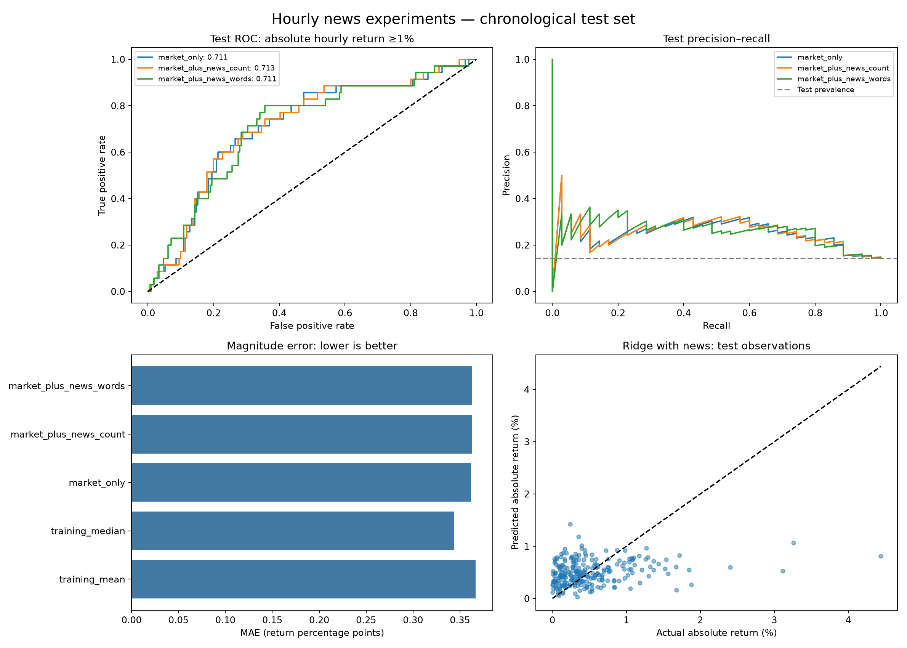

Logistic threshold: absolute hourly move ≥1%. Train: 550 hours. Test: 246 hours. News ends strictly before each full-hour price interval.

| n | positive_events | prevalence | roc_auc | average_precision | accuracy | balanced_accuracy | precision | recall | brier_score | log_loss | |
|---|---|---|---|---|---|---|---|---|---|---|---|
| constant | 246 | 35 | 0.1423 | 0.5000 | 0.1423 | 0.8577 | 0.5000 | 0.0000 | 0.0000 | 0.1220 | 0.4091 |
| market_only | 246 | 35 | 0.1423 | 0.7110 | 0.2658 | 0.8537 | 0.4976 | 0.0000 | 0.0000 | 0.1145 | 0.3771 |
| market_plus_news_count | 246 | 35 | 0.1423 | 0.7133 | 0.2676 | 0.8537 | 0.4976 | 0.0000 | 0.0000 | 0.1146 | 0.3767 |
| market_plus_news_words | 246 | 35 | 0.1423 | 0.7114 | 0.2712 | 0.8496 | 0.4953 | 0.0000 | 0.0000 | 0.1155 | 0.3804 |
| mae | rmse | r2 | mean_prediction | negative_raw_test_predictions_clipped | |
|---|---|---|---|---|---|
| training_mean | 0.003667 | 0.005472 | -0.000131 | 0.005064 | NaN |
| training_median | 0.003440 | 0.005810 | -0.127309 | 0.003174 | NaN |
| market_only | 0.003617 | 0.005294 | 0.064007 | 0.005165 | 0.000000 |
| market_plus_news_count | 0.003626 | 0.005289 | 0.065772 | 0.005280 | 0.000000 |
| market_plus_news_words | 0.003632 | 0.005379 | 0.033745 | 0.004972 | 0.000000 |
Negative R² means worse squared error than predicting the test mean. That is a diagnostic, not an available training baseline. Smaller MAE, RMSE, Brier and log loss are better.
Exploratory historical results; no causal claims. See metrics.json and README.md for coverage exclusions and day-bootstrap uncertainty.